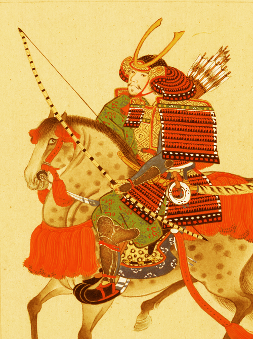

中世・近世ヨーロッパの地誌に現れていた東方の島国、日本のことである。語源については、「日本国」を中世の中国語で発音した音が語源とされる。
BUSHI
The eastern seagirt country which appeared in the Middle Ages and a topography in modernized world Europe is a Japanese thing. You make the noise which pronounced "Japan" in medieval Chinese with the etymology about the etymology.

bushi01_PT
2/27